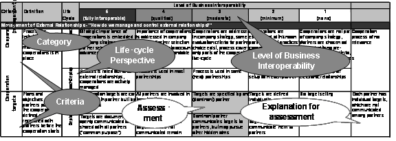

")

Business interoperability framework (BIF)
Goal
Development of a framework for determining business challenges relating to interoperability. The Business Interoperability Framework can be used to define the level of business interoperability for a given cooperation scenario.
- Find optimization potential for one collaboration
- Comparison of results with other collaborations
Description
The development of the BIF is based on the assumption (1) that the maximum level of business interoperability does not necessarily represent the optimum level and (2) that business interoperability does have a direct effect on a company's performance
The BIF is structured as follows:
- A number of categories represent the fundamental concepts of business interoperability as identified in a state-of-the-art analysis.
- Each of these categories is operationalised by a set of criteria (or sub-categories) which outline the key business decisions companies have to solve when establishing interoperable electronic business relationships.
- The life-cycle aspect of the criteria is covered by the dimensions approach, deploy and assess & review.
- The interoperability levels per criteria serve as a basis for assessment and a guideline towards higher levels of interoperability.

The base for the assessment is adequate data and information about the cooperation scenario; sources can be (structured) interviews (as in case 1), questionnaires, case studies or articles (as in case 2). Finally, the result needs to be interpreted. The interpretation depends on the objective of the assessment, which could be benchmarking with other organisations or industries, or identification of potential for improvement in the design of external relationships. For the comparison of two results it is essential to consider that the contingencies influence the level of business interoperability.
Resources
- Documentation: Deliverable D.B3.1 - Business Interoperability Framework